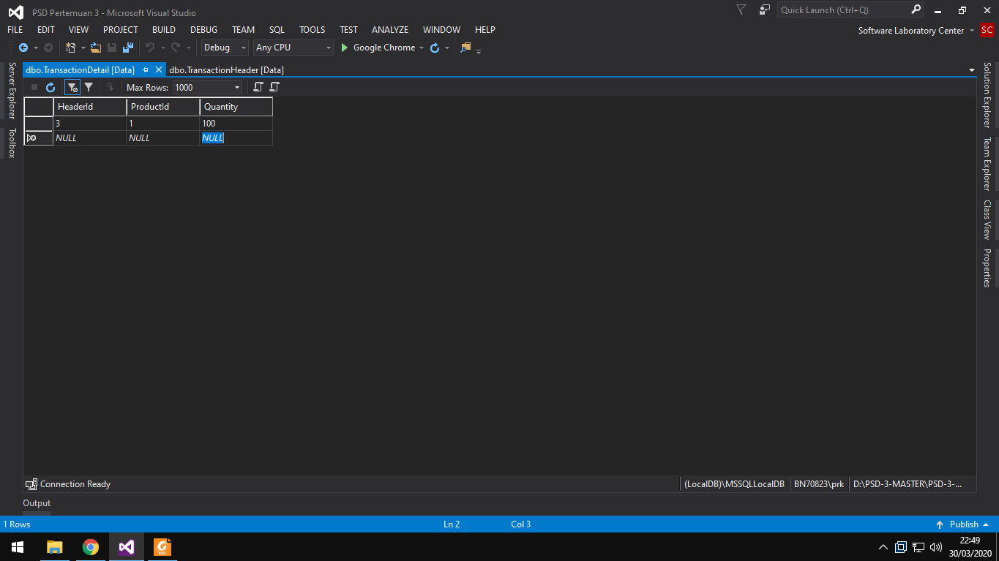

Di pertemuan ini kita akan melanjutkan pelajaran mengenai Domain Driven Design. Layer Domain Driven Design yang akan kita pelajari selanjutnya adalah Handler. Layer handler adalah layer yang berfungsi menjembatani controller dengan repository. Kenapa kita perlu layer handler ? kenapa tidak langsung dari controller memanggil repository ? anggapannya begini, misalnya kita mempunyai sebuah sistem dimana user dapat membeli item yang mereka mau. Ketika user membeli maka sistem akan berinteraksi dengan table transaksi (transaction table) dan sekaligus mengurangi stock di table item (item table). Jika tanpa layer handler maka kita akan memanggil 2 repository, yaitu repository transaction dan repository item. Proses seperti ini bisa kita masukkan kedalam 1 handler agar memfokuskan satu logic ke dalam satu layer saja. Karena jika kita buat di controller, controller sendiri sudah memegang logic untuk menampilkan data ke view, sehingga tidak baik bila controller mengerjakan lagi hal yang berhubungan dengan transaksi. Jika ini terjadi maka kemungkinan maintenance akan sulit.
Untuk lebih jelas kita akan mencoba membuat codingan layer handler dimana tugasnya adalah untuk menghandle transaksi.
Notes: codingan disini menggunakan template yang sudah dishare. Terdapat juga hasil codingan yang telah dibuat, tetapi disarankan untuk dicoba juga sendiri menggunakan template yang diberikan dan tutorial code dibawah ini.
Yang harus kita lakukan pertama kali adalah membukan file .sln nya dulu atau bisa open project lewat Visual Studio 2015 – nya. Setelah itu kita ke menu Server Explorer. Dimenu tersebut kita buat 2 table, yaitu table TransactionHeader dan table TransactionDetail.

Table TransactionHeader Attribute
1. Id int | auto increment | primary key
2. UserId int
3. TransactionDate date
Table TransactionDetil Attribute
1. HeaderId int | primary key | foreign key
2. ProductId int | primary key | foreign key
3. Quantity int
Kemudian jangan lupa untuk update modelnya.
Notes : model template sebelumnya ada model Product dan User. Jika diupdate akan muncul model TransactionHeader dan TransactionDetail berserta hubungan model – model tersebut.
Selanjutnya kita buat repository untuk menghandle data transaksi kita dengan database. Kita namakan TransactionRepository.
TransactionRepository akan memiliki dua function, yaitu AddTransactionHeader dan AddTransactionDetail. Kedua function tersebut digunakan untuk menginsert data kedalam table TransactionHeader dan TransactionDetail.
Kemudian kita buat factory untuk menghandle proses pembuatan object transaction nantinya. Kita namakan TransactionFactory.
Masih ingat fungsi dari factory ? fungsi dari factory adalah untuk membungkus proses pembuatan object kita, tujuannya adalah agar proses pembuatan object yang kompleks tidak dibuat dalam file codingan yang sama, jika hal tersebut dilakukan, maka kemungkinan maintenance akan sulit.
TransactionFactory akan memiliki dua function juga, yaitu CreateHeader dan CreateDetail. Kedua function tersebut digunakan untuk membuat object transaction dan mengembalikan hasil buatannya.
Selanjutnya diikuti dengan membuat handler, dimana handler ini akan berfungsi sebagai jembatan antara controller dan repository sekaligus mengatur logic transaksi yang akan terjadi (pada kasus ini adalah insert transaction). Kita namakan TransactionHandler.
Di TransactionHandler akan kita buat 1 function saja, misalnya CheckOut. Dimana function CheckOut akan digunakan untuk menghandle proses insert header dan detail dari sebuah transaksi yang terjadi. Disini function CheckOut memanggil CreateHeader dan CreateDetail dari layer Factoty kemudian AddTransactionHeader dan AddTransactionDetail dari layer repository.
Notes: Function CheckOut akan dipanggil ketika user sudah memilih barang dan melakukan check out.
Terakhir kita lanjutkan dengan membuat controller (untuk yang ini optional dikarenakan di aspx sendiri sudah mengenerate 2 file ketika kita buat formnya, yaitu .aspx (sebagai layer View) dan .aspx.cs (sebagai layer Controller)). Kita namakan TransactionController.
Di TransactionController cuman dibuat 1 function yang berfungsi untuk memanggil sih function CheckOut dari layer handler.
Notes: biasanya nama function kita samain biar tidak sudah dimengerti oleh manusia ketika dibaca.
Setelah logic pada layer factory, repository, handler , dan controller selesai, kita pindah ke Default.aspx.cs.
Pada Default.aspx.cs kita tambahkan beberapa line code di function
btnCheckOut_Click seperti gambar diatas.
Disini kita akan meretrive 2 nilai dari inputan user (ProductID dan
Quantity) dan satu nilai dari session hasil login user (UserID).
Kemudian kita tinggal
panggil function CheckOut dari layer controller.
Kita lanjutkan dengan testing sistemnya. F5 saja dari Login.aspx.
Masukan username dan password, kemudian tekan Login.
Notes: username : admin dan password : admin.
Nantinya bakal muncul tampilan seperti gambar dibawah.
Fieldnya terdiri dari ProductId, ProductName, ProductPrice, dan
Quantity.
Kemudian select salah satu product (yang diselect digambar adalah
product 1). Nanti bakal auto fill ke fieldnya untuk ProductId,
ProductName, dan ProductPrice.
Selanjutnya masukin quantity yang kita mau, misalnya 100 lalu tekan
Check Out.

Notes: Jika tombol Check Out ditekan function btnCheckOut_Click akan dijalankan beserta logic yang ada didalamnya.
Jika sudah tinggal cek isi dari table TransactionHeader dan TransactionDetail kita.

Dan hasilnya transaksinya sudah ada didalam table
TransactionHeader dan TransactionDetail.
Untuk materi mengenai handler sampai disini saja. Untuk lebih jelas
kalian bisa baca HOL yang sudah dishare juga. CTRL + F, ketik
handler, dan tekan enter 4x, nanti bakal di direct ke topic mengenai
handler.
Notes: Diturorial ini hanya mencontohkan satu TransactionHeader memiliki satu TransactionDetail, kalau di HOL contohnya satu TransactionHeader memiliki banyak TransactionDetail (sistem cart).
Jika ada yang ingin ditanyakan bisa hubungi aslabnya masing – masing. Thank You.